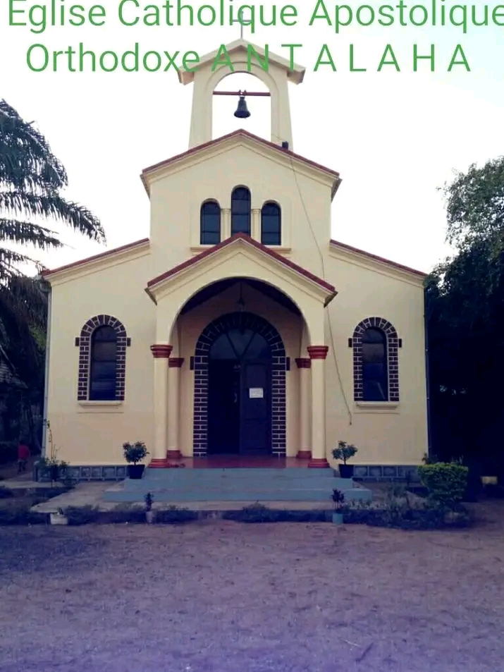
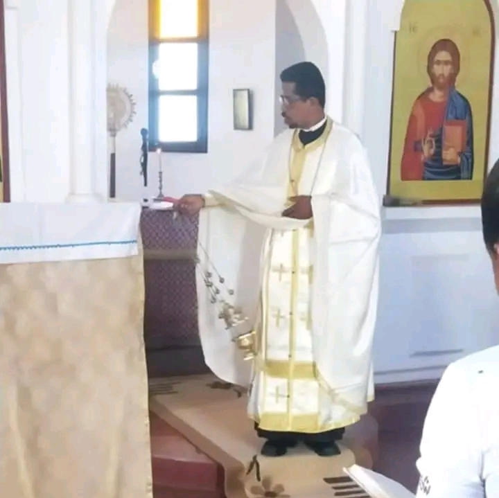
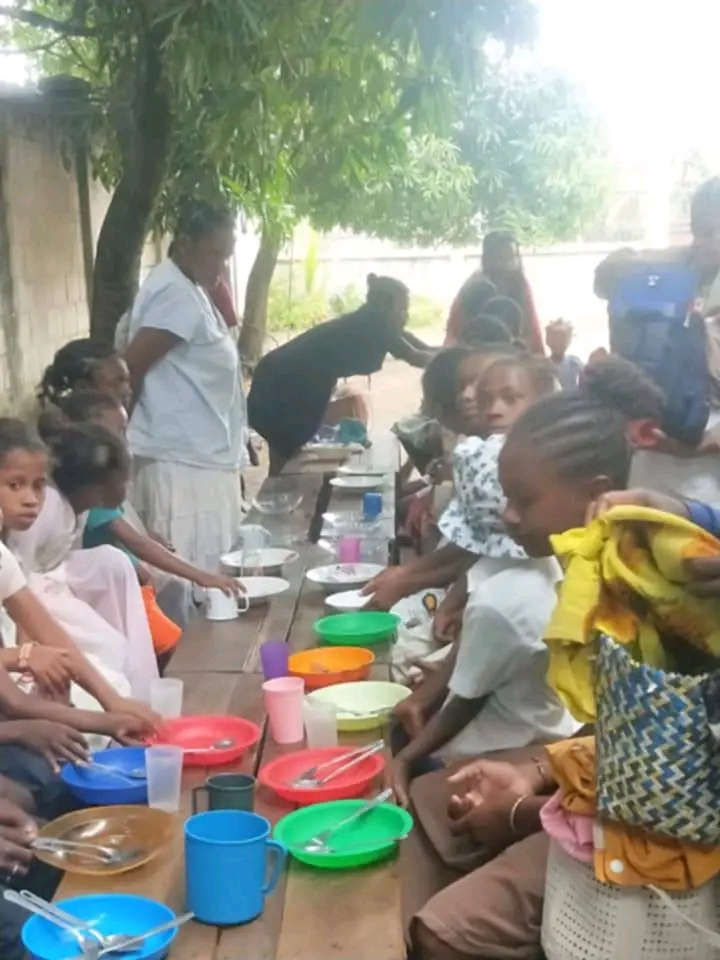
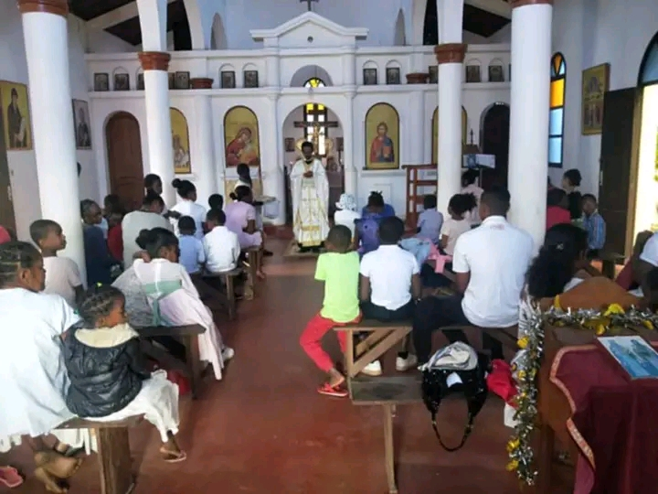
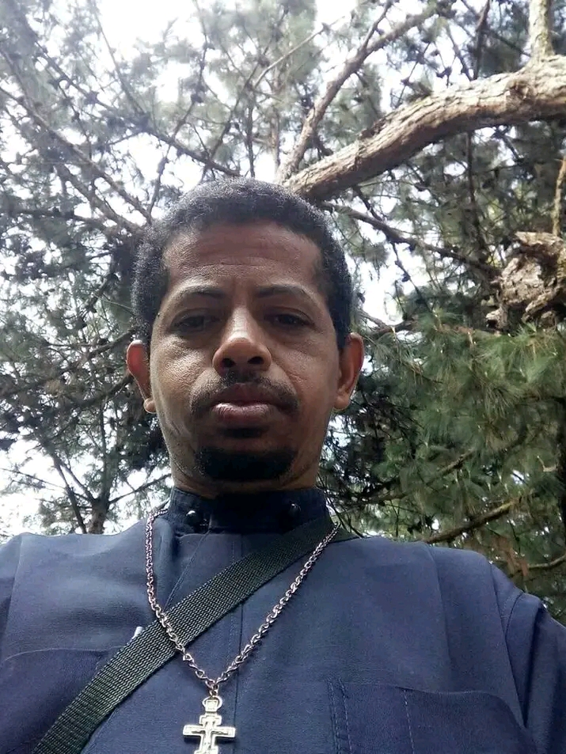
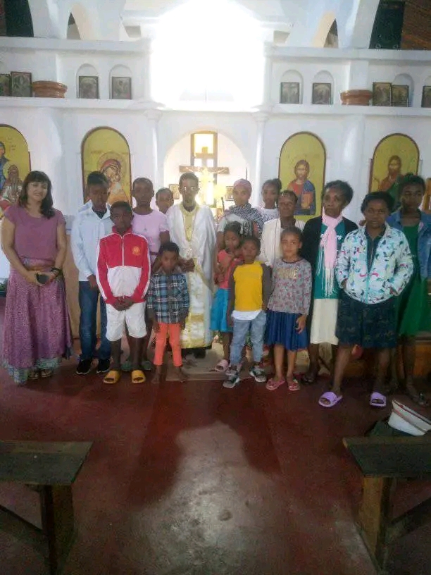
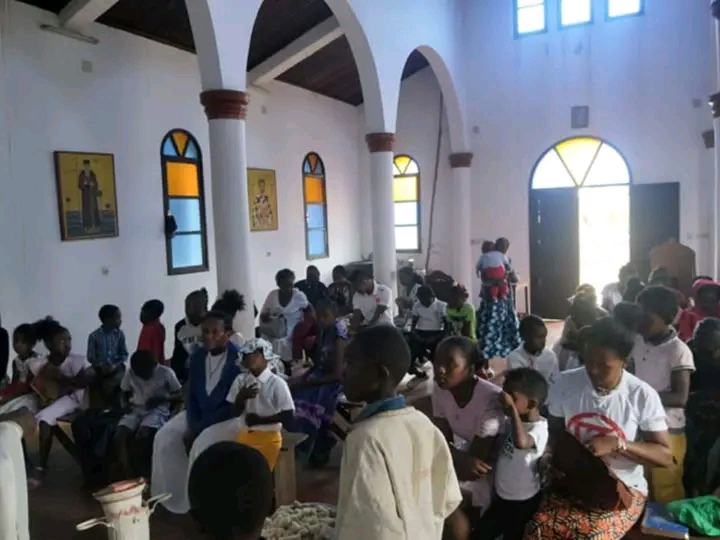

Bienvenue parmi nous
La paroisse orthodoxe Saint Zacharie et Élisabeth d'Antalaha est une communauté chrétienne vivante et dynamique, sous la juridiction du Patriarcat d'Alexandrie et de toute l'Afrique, au sein de l'Archidiocèse orthodoxe d'Antananarivo et du Nord de Madagascar.
Notre communauté compte aujourd'hui plus de 150 fidèles attachés à la vie liturgique et communautaire. La paroisse a été créée en janvier 1999, marquant le début de la présence orthodoxe organisée dans la région d'Antalaha.
L'église actuelle a été construite et consacrée le 15 août 2010, jour de la Dormition de la Mère de Dieu. La première ouverture officielle et célébration dans le nouveau bâtiment a eu lieu le 24 avril 2011, inaugurant une nouvelle ère pour notre communauté.
Fondée dans la tradition apostolique, cette paroisse préserve fidèlement la foi des Pères de l'Église, les saints sacrements et la riche spiritualité orthodoxe, tout en s'adaptant harmonieusement au contexte culturel et linguistique malgache.
Le prêtre en charge est le père Mathieu, qui guide la communauté avec dévouement. Le diocèse régional (Majunga et Nord de Madagascar) est actuellement dirigé par Mgr Niphon, évêque de Majunga et du Nord de Madagascar, succédant à l'ancien évêque Ignatios (qui fut archevêque de Madagascar pendant de nombreuses années).
Nous célébrons la Divine Liturgie en français et en malgache, et nous accueillons chaleureusement tous ceux qui désirent découvrir ou approfondir leur relation avec le Christ au sein de la plénitude de la foi orthodoxe chrétienne. Venez partager notre joie spirituelle !
"Car là où deux ou trois sont assemblés en mon nom, je suis au milieu d'eux." – Matthieu 18:20

Horaires des offices
Venez prier avec nous.
Les horaires peuvent être modifiés pendant les grandes fêtes liturgiques. Consultez notre page Facebook pour les mises à jour.
Activités paroissiales
La vie de notre communauté de plus de 150 fidèles
Catéchèse
Enseignement de la foi orthodoxe pour les enfants, les adolescents et les adultes. Préparation aux sacrements du baptême et du mariage.
Aide sociale
Service de charité et d'entraide communautaire. Soutien aux familles dans le besoin et visites aux malades.
Fêtes liturgiques
Célébration des grandes fêtes du calendrier orthodoxe : Pâques, Noël, Théophanie, et les fêtes des saints.
Galerie
Quelques moments de vie paroissiale depuis notre création en 1999






"Je vous laisse la paix, je vous donne ma paix. Je ne vous donne pas comme le monde donne. Que votre cœur ne se trouble point, et ne s'alarme point." – Jean 14:27
Contact & Localisation
Coordonnées
Église Orthodoxe Saint Zacharie et Élisabeth
Fondée en janvier 1999
Église consacrée le 15 août 2010
Quartier Belle rose
Antalaha 206, Madagascar
Téléphone : +261 32 45 807 32
Email : athanasiusroger@gmail.com